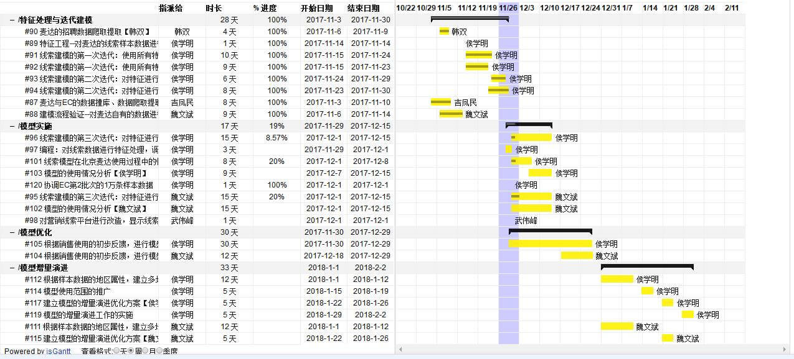
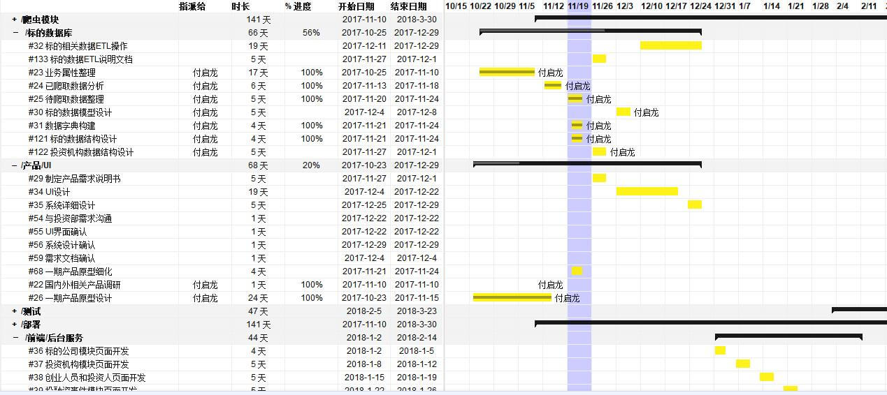
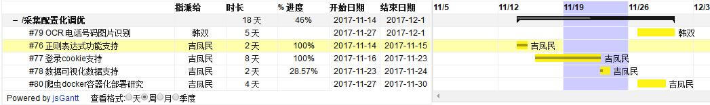
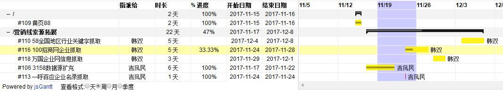
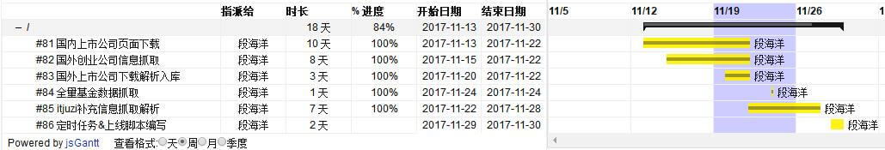
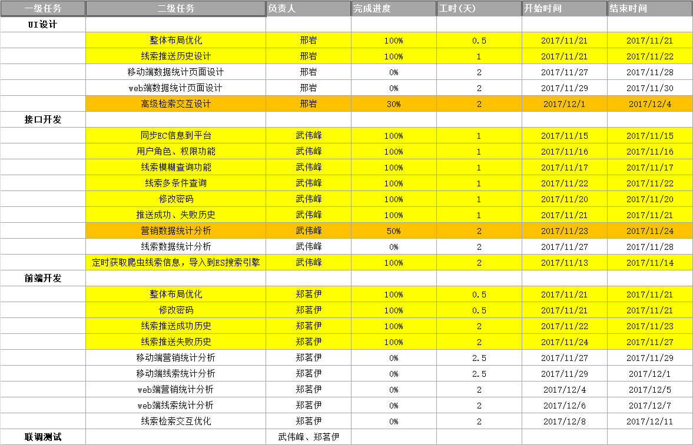

整 体 总 结
- 1）EC营销线索算法模型，本周重点是对第一次迭代模型进行验证和分析，并对特征工程进行优化。下周对企业简介、经营范围等信息进行文本分层特征挖掘，并用来完成模型优化，完成第二次建模迭代；
- 2）投资数据库方面，由于人力资源问题，初版应用产品的研发工作稍往后延，目前先推进数据模型设计，数据采集、清洗、积累等工作；
- 3）爬虫系统本周完成EC系统客户信息采集、IT桔子网站数据动态采集、以及营销线索采集优化等工作，centos系统下浏览器渲染方案调研和试验完成；
- 4）营销线索平台发布后，按收集反馈的意见进行用户搜索体验提升相关方面分析，并完成了检索和布局部分调整迭代。完成了平台移动版的初版开发，后续重点进行数据统计和分析方面的优化和迭代工作；
分项进展总结
营销DB
- 1）EC营销线索算法模型，完成了模型的第二次迭代，模型的测试结果：使用样本数据6331条，使用特征17113个（其中文本特征有3266个经营范围特征，12811个公司简介特征，36个公司基本属性特征）进行了模型训练，盲测后发现文本特征对模型有一定的提升，表现为预测概率结果在30%以上的公司，其实际为正的数据较多，而预测概率结果在10%以下的数据，其实际为0的数据较多；
- 2）使用python封装模型算法API，供爬虫采集到线索清洗处理后调用，并对已有数据进行概率预测评分；
- 3）和EC就模型的下一步调优进行沟通，当前的主要问题，一是特征还不够，而是样本量较少，EC后续会按相应要求再提供一批样本数据。
分项进展总结
爬虫系统
- 1）4000万企业数据采集工程，开始研发布隆过滤器、深度爬虫器；
- 2）OCR电话号码识别项目，使用 开源包tesseract进行图片识别，以及jTessBoxEditor进行结果矫正，目前测试结果准确率只有25%，目前正在收集图片样本进行训练，训练图片量越多结果越准确；
- 3）简单验证码识别项目，对验证码图片进行黑白化、去噪和识别开发，测试100张图片，识别率40%左右，进一步优化；
- 4）EC第二批10万样本公司列表数据维度补齐采集， 和第一批数据去重后剩7.8万企业， 再企查查上搜索完全匹配的只有6w企业。
分项进展总结
服务和前端应用
- 1）EC营销系统后台项目相关数据逻辑和功能服务实现工作，已完成如下：
- a）数据钻取功能，按省、市、行业分布钻取；
- b）历史推送记录里沟通状态数据补充；
- c）通话历史功能加入平台推送的总沟通量、有效沟通量等字段；
- d）根据公司地址从百度、高德获取经纬度功能，并根据经纬度查询附近公司功能（50%）；
- 2）EC销售数据统计分析，区分平台推送和其他渠道线索，统计动态线索量、拨打线索量、接通数量、拨打次数、有效沟通量、意向线索量、成单量等维度数据进行分析；
- 3）营销线索平台功能迭代：主体布局调整、整合相关功能并测试、发布；
- 4）营销线索平台移动端线索数据统计功能开发进行中。
线索池数据分布
线索分布热点
11月至今销售数据统计
| 分类 | 线索量 | 接通量 | 接通率 |
| 其他渠道 | 22872 | 12935 | 56.55% |
| 技术渠道 | 5515 | 3757 | 68.12% |
| 合计 | 28387 | 16692 | 58.80% |
团队人员情况
目前在职：14人
计划入职：无
本周面试：3人
人员缺口：产品经理、数据分析、JAVA开发、测试
总体阶段进展
关键子项目进展
EC数据和模型合作项目
标的数据库项目
关键子项目进展
爬虫系统-研发
营销线索源拓展
EC销售动态信息采集

标的IT桔子数据采集
关键子项目进展
前端应用第二阶段迭代计划
